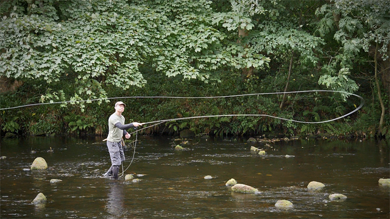
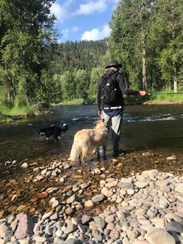

01 / THE APPROACH
About Tenkara
Where it came from, how it works, and how it compares with a rod-and-reel fly setup.
Explore the differencesFrom Missoula, Montana
A rod, a fixed line, and a fly. This is my introduction to tenkara, with the basics explained and the gear I actually use.
Start here
Find your starting point
01 / THE APPROACH
Where it came from, how it works, and how it compares with a rod-and-reel fly setup.
Explore the differences02 / THE BASICS
Meet the pieces of the setup, from the rod tip down to the kebari.
Learn the gear03 / MY SETUP
The Kaida pack rod and Dragontail lines I use, with links to find out more.
See my picks
The person behind the wizard
I'm based in Missoula. I fish with a Dragontail Kaida pack rod and usually use PVC-coated or furled line.
This site brings together a little background on tenkara, an explanation of the gear, and my own picks. If you're new to it, Getting Started is the place to begin.
See how the setup fits together